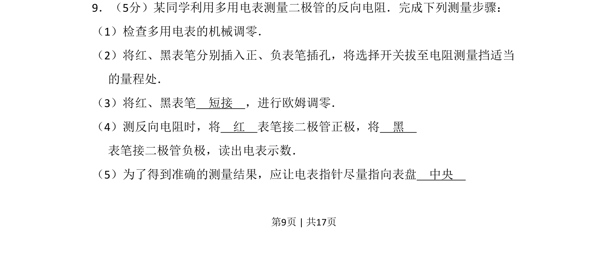
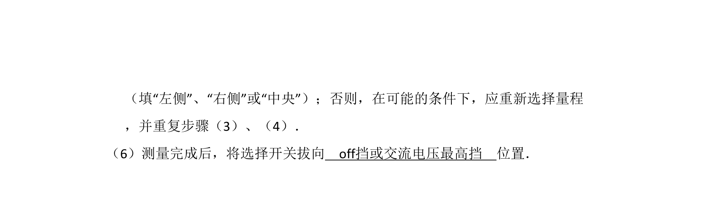
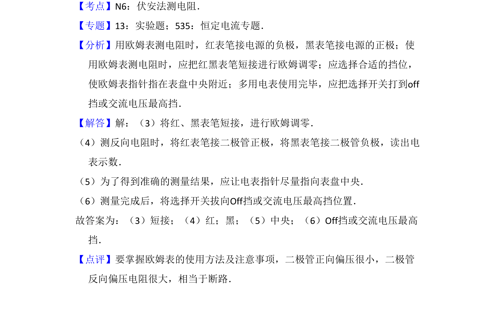

考点：多用电表的使用 欧姆调零 二极管反向电阻测量


考查多用电表欧姆调零及测量二极管反向电阻的操作步骤

📄 原 PDF 第 9 页：
素材/真题/吉林/2008-2024·（吉林）物理高考真题/2009年高考物理试卷（全国卷Ⅱ）（解析卷）.pdf
9．（5分）某同学利用多用电表测量二极管的反向电阻．完成下列测量步骤： （1）检查多用电表的机械调零． （2）将红、黑表笔分别插入正、负表笔插孔，将选择开关拔至电阻测量挡适当 的量程处． （3）将红、黑表笔 短接 ，进行欧姆调零． （4）测反向电阻时，将 红 表笔接二极管正极，将 黑 表笔接二极管负极，读出电表示数． （5）为了得到准确的测量结果，应让电表指针尽量指向表盘 中央